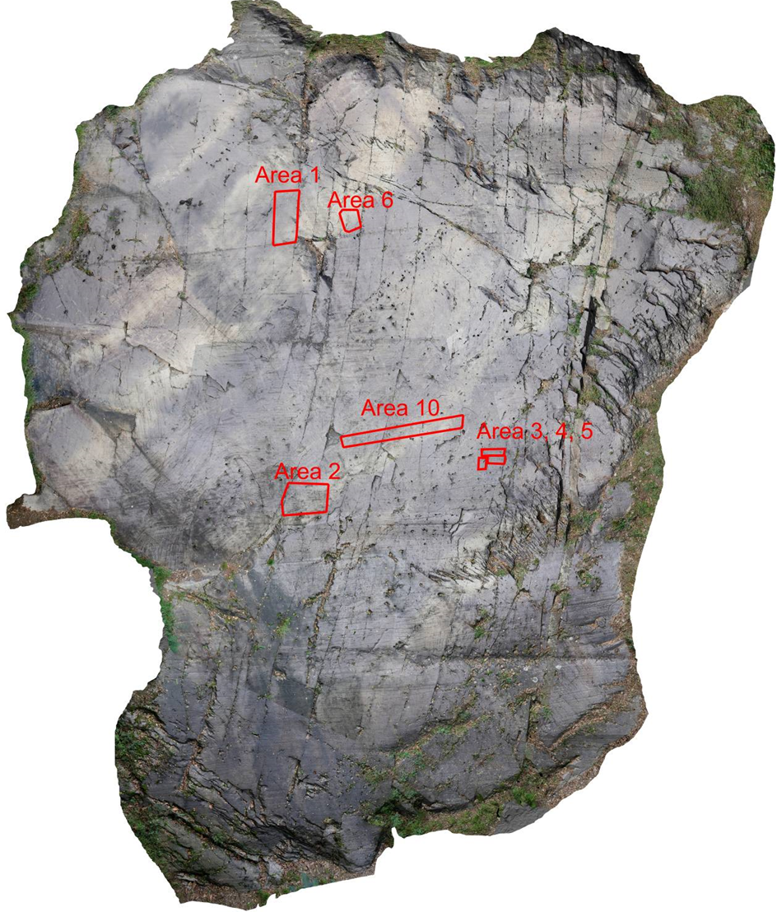

Seradina 12C
Seradina Rock 12C was scanned with a terrestrial laser scanner in a model resolution of 8 mm. The rock, showing numerous Pitoti, has an overall size of 16.5 m x 11.9 m.
This rock art panel is
called Seradina 12C.
Click on the hotspots
to find out more